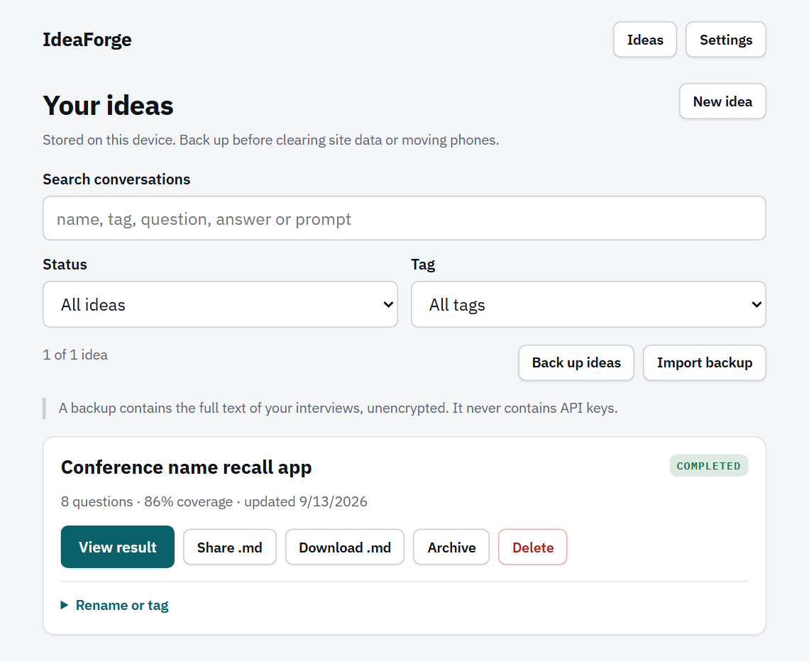

On-device conversations
Your ideas stay attached to their interviews.
The Ideas library holds active conversations, completed prompts, archived work, and unfinished answer drafts in this browser. Search and organise them locally, then use Markdown for a single result or JSON to move the whole library.

Open and find an idea
Use Ideas in the app header to open the whole library. The setup screen also shows a short recent list for quick continuation, but View all ideas opens the same complete library.
- Search conversations. Search matches the idea name, tags, opening statement, unfinished answer draft, questions, answers, recorded facts, and refined prompt text.
- Filter by status. Choose all, active, completed, or archived ideas.
- Filter by tag. The tag list is built from the tags currently present in the library.
- Open the card. Active ideas offer Continue; completed ideas offer View result.
Cards show the display title, status, answered-question count, coverage percentage, last update date, and tags. The display title uses your chosen name first, then a generated title, then the opening statement.
Understand library status
| Status | Meaning | Typical next action |
|---|---|---|
| Active | The interview is open, interrupted, or waiting for more answers. | Continue the interview; any saved answer draft is restored. |
| Completed | The interview has reached the result screen. It may contain a refined synthesis or a clearly marked degraded export if the final call failed. | View, share, download, or choose Ask me more. |
| Archived | The idea is deliberately hidden from the normal active/completed views, not deleted. | Restore it whenever it becomes relevant again. |
Rename, tag, archive, or delete
Expand Rename or tag on a card to give the idea a stable name and comma-separated tags. Saving the details updates the card, search index, export filename, and result title without changing the transcript.
| Action | Result | Reversible? |
|---|---|---|
| Archive | Keeps the full idea in local storage and in future backups, but gives it archived status. | Yes, with Restore. |
| Delete | Removes that session record from this device after confirmation. | No in-app undo. Restore only from a backup you already made. |
| Ask me more | Reopens a completed idea, restores it if archived, and marks the old synthesis as stale. | Yes; wrap again to replace the stale result. |
How unfinished answers are protected
While a question is open, IdeaForge saves the answer box after a short pause. It also attempts to flush the latest text when the document becomes hidden and before moving to Settings or Ideas. Opening the saved conversation restores the draft in the answer box.
Settled answers, skips, generated questions, coverage, and synthesis are each saved after their operation completes. If a storage write fails, IdeaForge reports the failure instead of pretending the session is safe.
Back up the whole library
- Open Ideas.
- Select Back up ideas.
- Store the downloaded, date-stamped JSON file somewhere you control.
A library backup includes every stored session, including active, completed, and archived ideas, along with tags, drafts, coverage, and transcripts. It does not contain provider or transcription API keys.
Import without overwriting local work
- Open Ideas on the destination browser.
- Select Import backup and choose an IdeaForge JSON backup.
- Read the status message for imported, copied, duplicate, or invalid records.
| Imported record | IdeaForge behaviour |
|---|---|
| ID not present locally | Imports it with its existing state. |
| Exact duplicate | Skips it instead of creating another copy. |
| Same ID, different content | Keeps both by assigning the imported version a new ID and adding (imported)to its visible name. |
| Invalid or unsupported row | Skips the unusable row and reports it; a malformed backup file is rejected. |
Move ideas to another device
- Create a fresh backup on the source device.
- Transfer the JSON file using a method you trust.
- Open IdeaForge on the destination device and import the backup.
- Confirm the expected active, completed, and archived ideas are present.
- Configure provider and transcription keys separately; they are intentionally absent from the backup.
Import merges into the destination library. It does not replace the whole destination database, so work already on that device remains available.
Share or export one idea
A library card offers Share .md and Download .md once the conversation has a recorded answer or skip. The completed result screen also offers Copy markdown.
| Control | What it does |
|---|---|
| Share .md | Prefers a Markdown file through the operating system share sheet. If file sharing is unavailable, it shares the Markdown as text. If the browser has no share sheet or sharing fails, IdeaForge downloads the file instead. |
| Download .md | Saves a Markdown file named from the idea title and last-update date. |
| Copy markdown | Copies the rendered export text; if clipboard access fails, the text remains selectable on screen. |
A single Markdown export is designed for reading and reuse: refined prompt first, followed by assumptions, open questions, coverage, and transcript. A JSON library backup is designed for restoring IdeaForge sessions. They are not interchangeable.
Data lifecycle at a glance
| Event | Effect on this device |
|---|---|
| Start an interview | Creates and saves a new session with the seed question. |
| Type an answer | Saves an unfinished draft after a short pause; sending records the answer in the transcript. |
| Wrap up | Stores the synthesis in the same session and marks it completed. |
| Archive | Keeps the session but changes how it is filtered. |
| Delete | Removes one session; it does not delete saved keys or device preferences. |
| Forget my key | Deletes the encrypted credential payload and wrapping key; interviews and finish-word preferences remain. |
| Clear browser site data | Removes browser-managed IdeaForge storage, including sessions and credentials. |
IdeaForge asks the browser for persistent storage when starting an interview or importing a backup, but the browser still controls retention. Installing the app can improve durability on some mobile platforms; it is not a substitute for a backup.